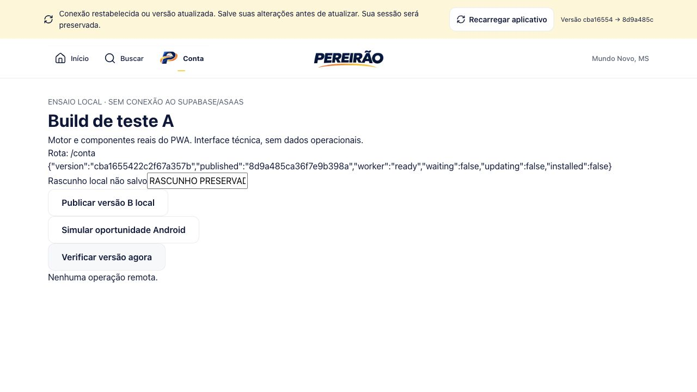
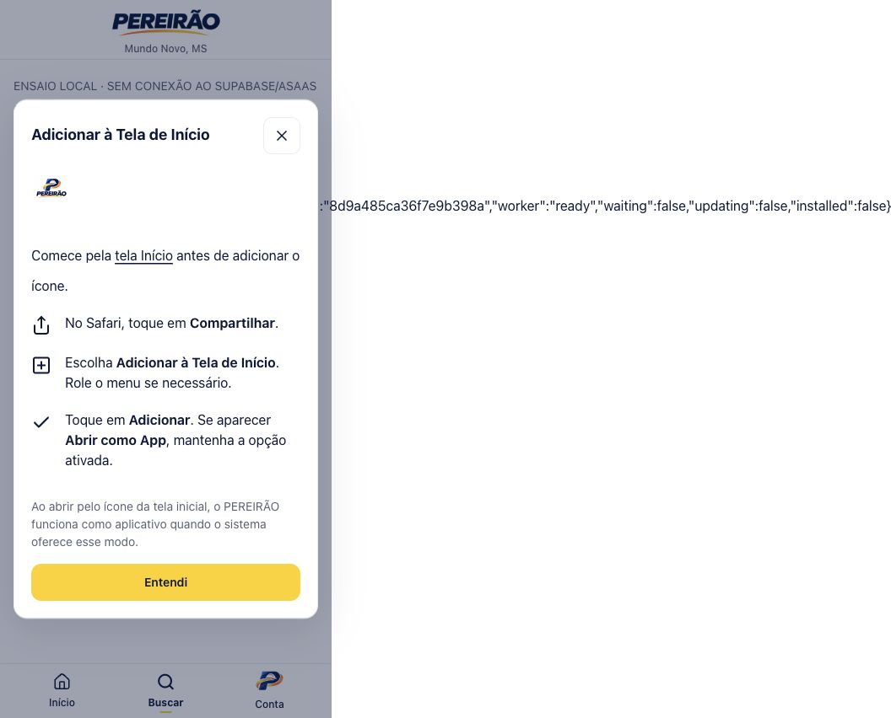
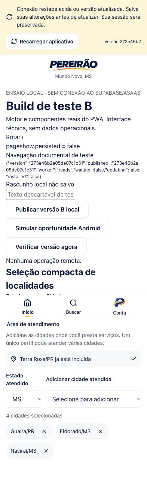
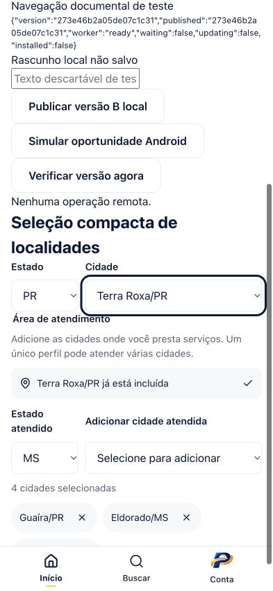

Branch fix/pwa-version-consistency. Base main d5176a53c61f7f274d83bad309596436077aad9c (PR #21 integrado).
Sem merge, migrações, alterações operacionais, pagamentos ou publicação de produção. As verificações físicas de Android/iPhone continuam pendentes.
O código anterior não identificava a versão da página nem consultava a versão publicada. Não escutava pageshow; um novo worker permanecia waiting até ação manual. Dois testes de reprodução falharam antes da correção e passaram depois. A ativação também apagava todos os caches estáticos anteriores e assumia outras abas, mesmo com formulários abertos.
Na produção, o HTML público respondeu com public, max-age=0, must-revalidate, worker com no-store e manifesto apontando à Home. Isso não comprova HTML vencido sendo servido. A hipótese mais sustentada é restauração de uma página antiga em memória, combinada com atualização sem conclusão. Não reproduzimos o relato original em aparelho físico nem pudemos inspecionar o atalho instalado; um ícone de Preview continua sendo hipótese de origem diferente. Não existe redirecionamento automático entre Preview e produção.
A restauração de páginas pode acontecer sem nova navegação de rede; o evento pageshow permite verificá-la. Referência: documentação de BFCache. A ativação imediata de um worker pode afetar todas as abas controladas: MDN skipWaiting.
/version.json, sem credenciais ou identidade de usuários.Ao encontrar uma versão nova, o formulário pode permanecer deliberadamente no build anterior com aviso até o usuário salvar ou autorizar a atualização. Isso evita perda de dados. Não é possível modificar retroativamente o JavaScript de uma aba aberta antes desta correção: essas abas podem exigir uma recarga inicial ou o botão de atualização já existente. Não se deve apagar o armazenamento do navegador.
| Recurso | Política |
|---|---|
| HTML/rotas SPA, version.json, sw.js e APIs | HTTP no-store; navegação busca rede; HTML não entra no CacheStorage |
| Manifesto e fallback offline | HTTP no-cache; revalidação |
| JS/CSS/fontes com hash | HTTP immutable; cache estático por versão e URL exata |
| Imagens públicas sem hash | HTTP max-age=0, must-revalidate; allowlist estática do worker por versão |
| Auth, Supabase, dados privados, financeiro e URLs assinadas | Fora do CacheStorage; nenhuma nova persistência |
As configurações Vercel serão verificáveis no Preview do PR; não houve mudança da produção. O build continua executando a verificação de segurança Asaas existente. Pix e cobranças reais não foram habilitados.
O convite foi retirado da posição flutuante e fica no fluxo normal da página, com marca oficial, botão e dispensa. Android/desktop só recebem botão nativo após beforeinstallprompt; o callback é chamado diretamente no toque. Aceitação do prompt não significa instalação concluída: a confirmação usa appinstalled quando disponível. Standalone oculta o convite.
No iPhone, o modal mostra Compartilhar → Adicionar à Tela de Início e orienta abrir no Safari quando necessário. Não há criação automática de atalhos. O navegador pode não informar que o aplicativo já está instalado em outro navegador/contexto; a supressão garantida é no modo standalone e após o evento de instalação disponível.
Estado e Cidade são selects nativos fechados; não exigem digitação. As UFs são derivadas do catálogo ativo recebido, sem lista fixa no componente, e a cidade é filtrada pela UF. Ao trocar UF, apenas o campo de cidade é limpo para evitar combinação inválida. Na busca, escolher uma UF requer escolher uma cidade antes de pesquisar, evitando aparentar um filtro estadual não suportado pelo backend.
Áreas de atendimento usam o mesmo seletor compacto para adicionar cidades, uma por escolha, com resumo e remoção individual. Origem permanece incluída; duplicatas são ignoradas. Cadastro/edição e navegação entre etapas preservam os IDs existentes; indisponíveis continuam visíveis no resumo para remoção explícita. Nenhum negócio, município ou área foi alterado remotamente.
Typecheck, 444 testes em 38 arquivos, build e histórico local aprovados. A suíte cobre autenticação, administração, especialidades, gratuidade e proteções financeiras com mocks; não representa ensaio autenticado remoto. Nenhuma alteração SQL neste PR.
| Cenário | Ambiente e resultado |
|---|---|
| Dois builds no mesmo origin (A → B) | Chromium IAB local com SW real — PASS: página pública atualizou para B |
| Outra aba com rascunho durante ativação | Chromium IAB local com SW real — PASS: texto preservado, aviso sem recarga |
| Voltar/avançar SPA e navegação documental | Chromium IAB local — PASS: permaneceu B; persisted=true não comprovado |
| BFCache persisted=true, falha de rede, deduplicação e loops | Vitest/DOM simulado — PASS |
| Android beforeinstallprompt | Evento sintético com callback em Chromium + testes unitários — PASS no toque; instalação física não executada |
| iPhone Safari/Chrome iOS | Detecção simulada + modal em Chromium — PASS instruções; Safari e aparelho físicos pendentes |
| Standalone, appinstalled e dispensa | Vitest simulado — PASS |
| Desktop sem oportunidade nativa | Vitest + Chromium local — PASS: nenhum botão nativo falso |
| Estados e cidades do catálogo | Componentes reais com fixture local de sete municípios — PASS nas nove larguras; origem/áreas mantidas |
| Login/logout/admin/financeiro/90 dias/especialidades | Suíte automatizada existente — PASS; sem operações remotas |
Nove larguras: 320, 375, 390, 393, 430, 768, 1024, 1280 e 1440 px; 393 × 852 incluído. Desvio do centro do cabeçalho: 0 px, sem overflow. São emulações Chromium; teclado virtual, instalação pelo ícone e suspensão real do iOS/Android precisam de aparelho físico.
Ensaio em localhost com dois builds reais e motor/SW reais do PWA, interface técnica e fixtures sintéticas. Não conectado ao Supabase/Asaas. Reproduzível com node scripts/pwa-browser-qa.mjs; publicar B no botão muda somente o servidor local.




Medições · Matriz de testes · Reprodução antes da correção
CI e Preview em acompanhamento no PR.